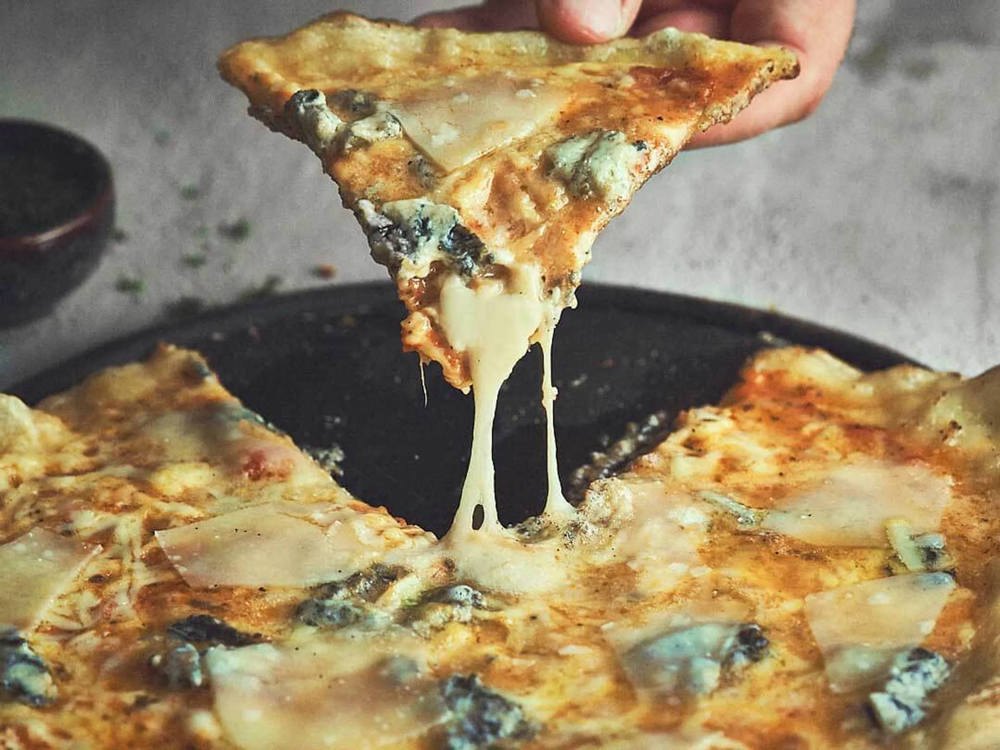

Pizza

Description
Quattro Formaggi Pizza - If you're looking for an ultra cheesy pizza then look no further than this classic! Homemade pizza dough topped with not one but four incredible cheeses. So rich and delicious you'll never have another pizza night without it!
Ingredients
- 1 pizza dough (for 10-12 inch pizza)
- 1 tablespoon garlic oil
- 1/2 small red onion, very thinly sliced
- 2 ounces saga blue cheese, cubed
- 2 ounces gruyere cheese, grated
- 2 ounces mozzarella cheese, cubed
- 2 tablespoons freshly grated parmesan cheese
- 1 tablespoon chopped fresh thyme black pepper
Steps
- Preheat the oven to 425 degrees.
- Roll out pizza dough on a lightly floured surface to 10-12 inches.
- Place on lightly greased baking sheet or seasoned pizza stone.
- Pinch up the dough edges to make thin rim.
- Brush dough with garlic oil and top with red onion.
- Scatter saga blue and mozzarella cheese over dough.
- Mix together the gruyere, parmesan and thyme.
- Sprinkle over.
- Grind black pepper over entire pizza.
- Bake for 15-20 minutes, until crisp and golden and the cheese is bubbling.
- Serve immediately!